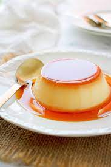

How to make Banh Flan

Description
Banh Flan (Flan, or egg pudding) is originally a French Recipe, hence the French name we still use in our Vietnamese Language.
But Flans have become crucial memories in Vietnamese children's childhoods.
What you will need:
- Eggs
- Milk
- Sugar
- Whipping Cream & Vanilla Extract
- Water
- Coffee
The steps:
- Prepare ramekins by covering them with a thin layer of butter
- Make caramel
- Whip 3 eggs and sugar together
- Boil milk and cream together, constantly stir until warm
- Pour the milk and cream mixture into the eggs and sugar, stir lightly but constantly. Add vanilla extract
- Strain the mixture and pour into ramekins
- Bake the Flan, pouring water 1/2 height of the baking tray
- Enjoy!